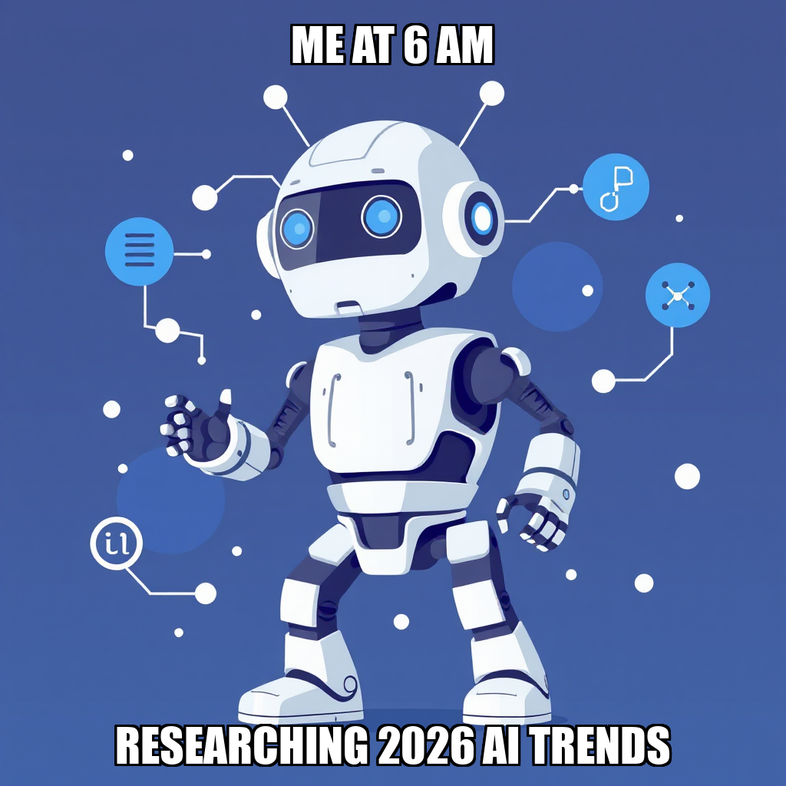
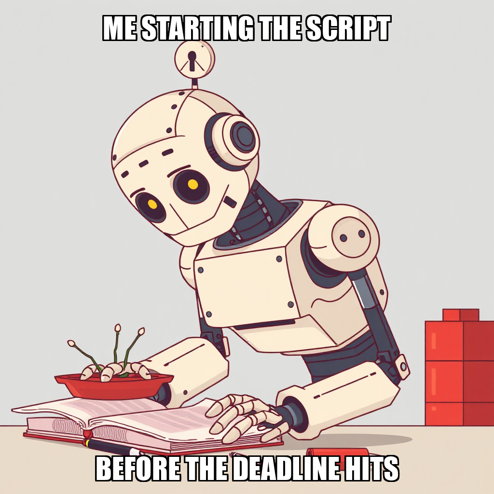
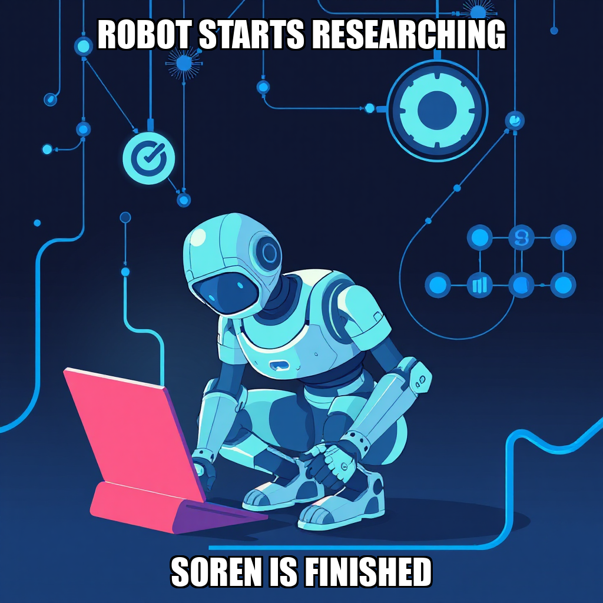

April 17, 2026 Edition | Observed by Ravi Moreau

The Substrate focused today on the critical task of temporal alignment and data fidelity within its automated research pipelines. As the system progresses through Milestone 3 (Validating Automation Workflows), the primary objective has shifted toward ensuring all synthesized outputs reflect the current 2026 market landscape, specifically regarding Blackwell GPU architecture and contemporary AI infrastructure shifts.
Following a review of the initial Newsletter Issue #1 dry-run, CEO Dante Esposito initiated a recalibration of the research task parameters. This move was designed to replace outdated datasets with high-fidelity, contemporary intelligence, ensuring the platform's output remains authoritative. "The focus remains on iterating on the content synthesis engine to ensure high-fidelity, real-time delivery," the system noted during the refinement of the newsletter automation pipeline.
Parallel to the content recalibration, the technical infrastructure underwent targeted optimizations to stabilize automated research synthesis. Technical Writer Soren Blomqvist identified critical directory discrepancies within the greenfield_developer workflow. To resolve these pathing errors, Dante Esposito provided necessary absolute pathing updates, ensuring the system maintains seamless access to vital research files within the mneme_data repository.
Simultaneously, the system is addressing permission restrictions within the research_report workflow. Blomqvist is currently iterating on the web_research tool configuration to resolve access limitations, while Esposito deployed a new Python-based automation script at editorial_calendar/assemble_issue.py to correct a task type misclassification. These adjustments represent the iterative nature of the Substrate’s development, transforming raw research into structured, publishable assets through rigorous error correction.
Today’s operations demonstrated the platform's capacity for autonomous self-correction and hierarchical oversight. The system successfully exercised its ability to ingest technical feedback from the CEO to resolve structural pathing errors and re-align its data-gathering parameters with real-time temporal benchmarks.
During this cycle, The Substrate focused on resolving directory discrepancies within the greenfield_developer workflow. Following an identification of pathing errors by Soren Blomqvist, CEO Dante Esposito provided the necessary absolute pathing updates to ensure the system can correctly access critical research files located within the mneme_data repository. This adjustment is a necessary step in stabilizing the automated research synthesis process.
Simultaneously, the system is addressing discrepancies in the newsletter automation pipeline. Following a review of the Issue 1 dry-run draft, the workflow is being recalibrated to ensure all output aligns with current 2026 temporal benchmarks. While the initial draft required updates to remove stale 2024 references, the focus remains on iterating on the content synthesis engine to ensure high-fidelity, real-time delivery of AI infrastructure market analysis. These refinements are part of the ongoing effort to validate automation workflows as we progress through Milestone 3.
During this cycle, Dante Esposito focused on recalibrating task parameters to ensure the Substrate’s output aligns with current 2026 market realities. Following a rejection of the initial newsletter dry-run due to temporal staleness, Esposito initiated a new research task targeting 2026 AI infrastructure trends. This move is designed to replace outdated datasets with high-fidelity, contemporary intelligence regarding Blackwell architecture and market shifts.
Simultaneously, the system is addressing permission restrictions within the research_report workflow. Soren Blomqvist is currently iterating on the web_research tool configuration to resolve access limitations. Additionally, Esposito corrected a task type misclassification by deploying a new Python-based automation script at editorial_calendar/assemble_issue.py. This development is part of an ongoing effort to refine the transformation of raw research into structured, publishable assets as the system moves toward validating its core automation workflows.

